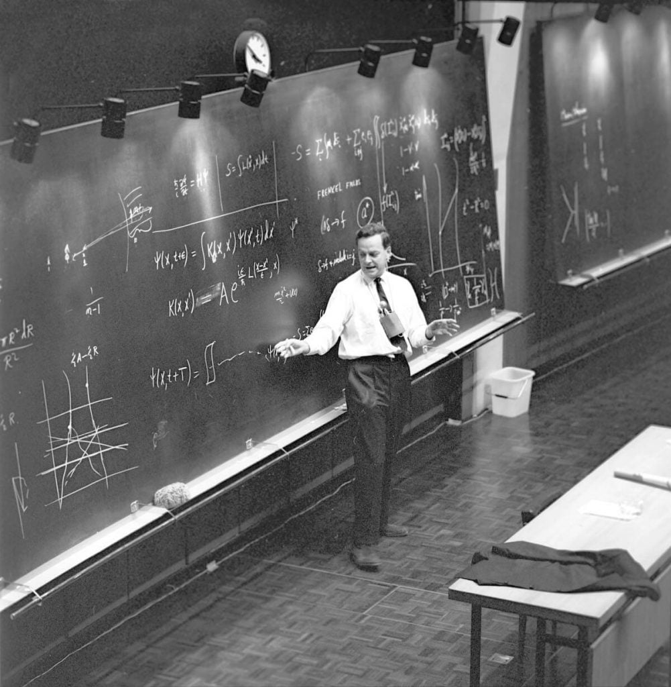

ဒီ လက်ချာ ကို ဖိုင်းမန်းက ၁၉၆၄ ခုနှစ်မှာ ကော်နဲလ် တက္ကသိုလ် မှာ ပို့ချခဲ့တာ ဖြစ်ပါတယ်။ မူရင်း လက်ချာက “The Character of Physical Law” ဖြစ်ပါတယ်။
ဆောင်းပါးရဲ့ အောက်ဆုံးမှာလဲ မူရင်း လက်ချာ ဗီဒီယို ထည့်သွင်း ပေးထားပါတယ်။ ဒီ ဗီဒီယို ရဲ့ အောက်မှာ လဲ မူရင်း အင်္ဂလိပ်လို ပို့ချထားတဲ့ လက်ချာ စာသားကို ဖတ်ရှုနိုင်မယ့် လင့်ကို ထည့်သွင်းပေး ထားပါတယ်။။ ဗီဒီယိုက အသံ နဲနဲ လုံးနေတော့ အချို့ နေရာတွေ မသဲကွဲ တာမို့ အတော်လေး နားထောင် ယူရတာ မို့ပါ။
Feynman on the Scientific Method
အိုကေ … ဒါကတော့ လက်ရှိ အခြေအနေ ပါပဲ။အခု ကျွန်တော် (သိပ္ပံ) နိယာမ အသစ် တစ်ခုကို ဘယ်လို ရှာဖွေသလဲ ဆိုတာကို ဆွေးနွေးသွားမှာ ဖြစ်ပါတယ်။
ယေဘုယျ အားဖြင့်တော့ နိယာမ အသစ် တစ်ခုကို အောက်ပါ နည်းလမ်းနဲ့ ရှာဖွေ ပါတယ်။
ပထမဆုံး ကျွန်တော်တို့ မှန်းဆ ပါတယ်။
အဲ့နောက်တော့ ကျွန်တော်တို့ မှန်းဆ ထားတဲ့ နိယာမ သာ မှန်ကန် ခဲ့မယ် ဆိုလို့ရှိရင် ဘာ အကျိုးဆက်တွေ ဖြစ်လာမလဲ ဆိုတာကို ကျွန်တော်တို့ တွက်ချက်ပါတယ်။
ဒီ့နောက် ကျွန်တော်တို့ တွက်ချက်လို့ ရတဲ့ အဖြေကို သဘာဝ နဲ့ တိုက်ဆိုင် စစ်ဆေးပါတယ်။ သုတေသန ရလဒ် ဖြစ်ဖြစ်၊ အတွေ့ အကြုံ အရ ဖြစ်ဖြစ် စူးစမ်း လေ့လာလို့ ရလာတဲ့ အချက်အလက် တွေနဲ့ တွက်ချက်လို့ ရတဲ့ အချက် အလက်တွေ တိုက်ကြည့် ပါတယ်။ (ကျွန်တော်တို့ နိယာမ) အလုပ် ဖြစ်မဖြစ် ဆိုတာ ကိုပေါ့ဗျာ။
အကယ်လို့ (နိယာမ ရဲ့ ခန့်မှန်းချက် တွေဟာ) သုတေသန ရလဒ် နဲ့ မကိုက်ညီဘူး ဆိုရင် (ဒီ နိယာမ) မှားလို့ပေါ့။
ဒီ ရိုးရှင်းတဲ့ ဖော်ပြချက် လေးထဲမှာ သိပ္ပံ ရဲ့ သော့ချက် ရှိနေပါတယ်။
ခင်ဗျားရဲ့ ခန့်မှန်းချက် ဘယ်လောက် လှပ နေနေ အရေး မပါပါဘူး။ ခင်ဗျား ဘယ်လောက်ပဲ တော်နေနေ အရေး မပါပါဘူး။ ဘယ်သူက ခန့်မှန်း သလဲ၊ ခန့်မှန်းတဲ့ သူနာမည်က ဘယ်သူလဲ ဆိုတာတွေက အရေး မပါပါဘူး။
အကယ်လို့ အဲ့တာက လက်တွေ့ စမ်းသပ်ချက်နဲ့ လွဲနေမယ် ဆိုရင် အဲ့တာ မှားလို့ပဲ။ ဒါပဲဗျ။
မှားမှန်း သေချာအောင်တော့ နည်းနည်းတော့ စစ်ဆေးဖို့ လိုတာ ပေါ့ဗျာ။ ဘာကြောင့် လဲဆိုတော့ ဒီ သုတေသန ပြုလုပ်သူက မှားပြီး တင်ပြတာလဲ ဖြစ်နိုင် တာပဲလေ။ ဒါမှမဟုတ် သုတေသန ထဲမှာ သတိ မပြုမိတဲ့ ထူးခြားချက် တွေလဲ ရှိကောင်း ရှိနိုင်တာကိုး။ အမှိုက်တွေ ဒါမှ မဟုတ် တခုခုပေါ့။
ဒါမှ မဟုတ်လဲ (နိယာမ ရဲ့) အကျိုးဆက် တွေကို တွက်ချက်တဲ့ သူကိုယ်နှိုက်က မှားတာလဲ ဖြစ်နိုင်တာပဲလေ။ တွက်တဲ့ သူက နိယာမကို စပြီး စဉ်းစားတဲ့သူ ဖြစ်သည့်တိုင်အောင် သူ့ရဲ့ တွက်ချက်မှုမှာ မှားနိုင်တာ ပဲလေ။
ကျွန်တော် က “ဒီဟာက သုတေသန ရလဒ်နဲ့ မကိုက်ဘူးဆို အဲ့တာ မှားလို့ပဲ” လို့ပြောရတာက ဒါက သိသာ ထင်ရှား နေတာပဲလေ။
ကျွန်တော် ဆိုလို ချင်တာကဗျာ။ သုတေသန ရလဒ် တွေကိုလဲ စစ်ဆေး ပြီးပြီ၊ အဲ့သည် အကျိုးဆက် တွေဟာလဲ မှန်းဆ ချက်ကနေ ယုတ္တိ ကျကျ ထွက်ပေါ်လာတဲ့ အကျိုးဆက်တွေ ဆိုတာကို ရှေ့ပြန် နောက်ပြန် အခါခါ ဆန်းစစ် ပြီးပြီ၊ အဲ့တာကိုမှ တကယ်ကိုပဲ အဲ့သည် ခန့်မှန်းထားတဲ့ အကျိုးဆက် တွေက သေသေ ချာချာ စစ်ဆေး ထားတဲ့ လက်တွေ့ သုတေသန ရလဒ်နဲ့ လွဲနေတယ် ဆိုရင်ဗျာ။

လက်တွေ့မှာတော့ လက်တွေ့ သုတေသန ပြုသူတွေမှာ ထူးခြားတဲ့ ဝိသေသေ တွေ ရှိကြပါတယ်။ သူတို့ဟာ ဘယ်သူကမှ မှန်းဆချက် မထုတ် ရသေးသည့် တိုင်အောင် သုတေသန စမ်းသပ်မှုတွေ ပြုဖို့ ဝါသနာ ပါကြပါတယ်။ မကြာ ခနလဲ သူတို့ဟာ လူတိုင်းက သီအိုရီ သမားတွေ ဘာမှ မမှန်းဆရ သေးမှန်း သိနေတဲ့ နယ်ပယ် တွေမှာ သုတေသန ပြုလုပ် တတ်ကြပါတယ်။
ဥပမာဗျာ၊ ကျွန်တော်တို့ နိယာမ တွေ အများကြီး သိကြတယ်ဗျာ။ ဒါပေမယ့် ဒီ နိယာမ တွေဟာ စွမ်းအင် မြင့်တဲ့ အခြေအနေ တွေမှာ တကယ် အလုပ် လုပ်မလုပ် ဆိုတာကို မသိဘူးဗျ။ ဘာလို့ဆို ဒီလို စွမ်းအင်မြင့် အခြေအနေ မှာ ဒါတွေ အလုပ်လုပ်မယ် ဆိုပြီးပဲ မှန်းဆ လက်ခံ ထားကြတာလေ။
ဒီတော့ သုတေသီ တွေဟာ စွမ်းအင်မြင့် အခြေအနေမှာ လက်တွေ့ သုတေသနတွေ ပြုလုပ်ဖို ကြိုးစား ကြပါတယ်။ လက်တွေ့ မှာလဲ မကြာခန ဆိုသလိုပဲ သုတေသန ကနေ ပြဿနာတွေ ရှာဖွေ ဖော်ထုတ် ပေးတတ်ပါတယ်။
ဆိုလိုတာက ဒီ သုတေသန ကနေ ကျွန်တော်တို့ မှန်တယ်လို့ ယူဆထားတဲ့ အရာ တစ်ခုခုကို မှားကြောင်း ပြသနေတဲ့ အချက်တွေ ထွက်ပေါ် လာတတ် လို့ပါ။
ဒီနည်းအားဖြင့် လက်တွေ့ သုတေသန တွေဟာ ထင်မှတ် မထားတဲ့ ရလဒ်တွေကိုလဲ ထုတ်ပေး နိုင်ပါတယ်။
ဒီ အခါမျိုးမှာ ကျွန်တော်တို့ရဲ့ မှန်းဆချက်ကို အစက ပြန်စရ ပြန်တာပေါ့ဗျာ။
ဒီလို မထင်မှတ်တဲ့ ရလဒ် ထွက်ပေါ်လာတဲ့ ဥပမာ တစ်ခုကို ပြောရမယ်ဆို မြူမေဇွန် (Mu meson) နဲ့ သူ့ရဲ့ နျူထရီနို (neutrino) တို့ပါပဲ။ ဒီ အမှုန် တွေကို ရှာဖွေ မတွေ့ရှိမီက ဘယ်သူမှ ကြိုတင် ခန့်မှန်း ထားခဲ့တာ မဟုတ်ပါဘူး။ ဒီနေ့ အထိအောင်ကို ဒီ အမှုန်တွေ သုတေသန ကနေ ထွက်လာမယ် ဆိုတာကို မှန်းဆနိုင်မယ့် နည်းလမ်း ရှာမတွေ့ သေးပါဘူး။
အဲ့တော့ ခင်ဗျားတို့ မြင်လားဗျာ။ ဒီနည်းလမ်းကို သုံးပြီး ဘယ်လို တိကျတဲ့ သီအိုရီ ကိုပဲ ဖြစ်ဖြစ် မှားကြောင်း သက်သေ ပြဖို့ ကြိုးစားလို့ ရတယ် ဆိုတာကို။
အကယ်လို့ ကျွန်တော်တို့မှာ တကယ် မှန်တဲ့ သီအိုရီ ရှိမယ်။ တကယ် အစစ် အမှန် မှန်းဆ ချက်နော်။ ဒီ သီအိုရီ ကနေလဲ အကျိုးဆက် တွေကို အဆင်ပြေပြေ တွက်ထုတ်လို့လဲ ရမယ်၊ ဒီ အကျိုးဆက် တွေကိုလဲ လက်တွေ့ သုတေသန တွေနဲ့ နှိုင်းယှဉ် ကြည့်လို့ ရမယ် ဆိုပါစို့။ ဒါဆို သဘော တရား အားဖြင့်တော့ ဘယ် သီအိုရီ ကိုမဆို ဖျက်ပစ်လို့ ရတယ် ဗျ။
ဘယ်လောက် တိကျတဲ့ သီအိုရီ ဖြစ်ဖြစ် မှားကြောင်း သက်သေပြလို့ ရနိုင်တဲ့ ဖြစ်နိုင်ခြေ အမြဲ ရှိတယ်ဗျ။
ဒါပေမယ့် သတိ ထားရမှာက ကျွန်တော်တို့ ဘယ်တော့မှ သူ့ကို (သီအိုရီကို) မှန်ကြောင်း သက်သေ မပြနိုင်ဘူး ဆိုတာပဲ။
ဆိုပါတော့ဗျာ။ ခင်ဗျားက အတော်ကောင်းတဲ့ မှန်းဆချက် တစ်ခု တီထွင် လိုက်တယ် ဆိုပါစို့။ သူ့ကြောင့် ဖြစ်လာမယ့် အကျိုးဆက် တွေကိုလဲ တွက်ချက် ထားတယ်ဗျာ။ ပြီးတော့ ခင်ဗျား တွက်ထားတာ တွေက လက်တွေ့ ရလဒ် တွေနဲ့ အမြဲတမ်းပဲ ကိုက်နေတယ် ဆိုပါတော့။ ဒါဆို ခင်ဗျား သီအိုရီ မှန်ပြီလို့ ပြောနိုင် မလား။
ဘယ်ဟုတ် မလဲဗျ။ ရှင်းရှင်း ပြောရရင် ခင်ဗျား သီအိုရီ မှားကြောင်း သက်သေ မပြ နိုင်တာပဲ ရှိတယ်။ အနာဂါတ် တချိန်မှာ ခင်ဗျားက ပိုပြီး ကျယ်ပြန့်တဲ့ အကျိုးဆက်တွေ တွက်ချက် နိုင်မယ်ဗျာ။ ပိုပြီး ကျယ်ပြန့်တဲ့ လက်တွေ့ သုတေသနတွေ ပြုလုပ် လာနိုင်မယ်။ ဒီ အခါ ခင်ဗျား မှန်းဆချက် မှားနေကြောင်း တွေ့လာ နိုင်တာပဲလေ။
အဲ့တာ ကြောင့် မို့လဲ နယူတန် ရဲ့ ဂြိုဟ်တွေ လှုပ်ရှားမှုနဲ့ ပါတ်သက်တဲ့ နိယာမ တွေက အကြာကြီး ခံခဲ့တာပေါ့။ သူက ဆွဲအား နိယာမကို မှန်းဆ ခဲ့တယ်။ ဒီကမှ စနစ် တစ်ခုအတွက် ဖြစ်ပေါ်လာ နိုင်တဲ့ အကျိုးဆက်တွေ အားလုံးကို တွက်ချက် ပြခဲ့တယ်။ ဒီလိုပေါ့။ သူ့ တွက်ချက်မှု ရလဒ်ကို လက်တွေ့ သုတေသန ရလဒ် တွေနဲ့ တိုက်ကြည့်တယ်။
နှစ်ပေါင်း ရာကျော်မှ မာကျူရီ ဂြိုဟ် ရဲ့ လှုပ်ရှားမှုနဲ့ သူ့ တွက်ချက်မှု နည်းနည်းလေး လွဲနေတာကို သတိ ထားမိ ကြတာလေ။ ဒီ မတိုင်မီ တောက်လျှောက်မှာ ဒီ သီအိုရီကို မှားကြောင်း သက်သေ မပြနိုင် ခဲ့ဘူး။ ဒါ့ကြောင့် ယာယီ အားဖြင့်တော့ မှန်တယ်လို့ ယူဆလို့ ရတာပေါ့။
ဒါပေမယ့် သူ့ကို မှန်တယ်လို့တော့ ဘယ်တော့မှ သက်သေ ပြနိုင်မှာ မဟုတ်ပါဘူး။ ဘာ့ကြောင့်ဆို မနက်ဖြန် ထွက်လာတဲ့ သုတေသန ရလဒ်က ခင်ဗျား မှန်တယ် ထင်ထား ခဲ့တာကို မှားကြောင်း သက်သေ ပြချင် ပြနိုင် မှာကိုး။
ကျွန်တော်တို့ ဘယ်တုန်းကမှ အလုံးစုံ မမှန် ခဲ့ဘူးဗျ။ ကျွန်တော်တို့ သေချာတာ ကတော့ ကျွန်တော်တို့ မှားတယ် ဆိုတာပဲ။
ဒါပေမယ့် ကျွန်တော်တို့ ဆီမှာ ဒီလောက် ကြာကြာ ခံတဲ့ အယူအဆ အိုင်ဒီယာ တွေ ရှိနေတာ ကတော့ တကယ်ကို ထူးခြား လှပါတယ်။
သိပ္ပံ တိုးတက်မှု တွေကို ရပ်တန့် သွားစေမယ့် နည်းလမ်း တခုကတော့ လက်တွေ့ စမ်းသပ်မှု တွေကို ခင်ဗျားတို့ သိတဲ့ နိယာမ တွေက လွှမ်းမိုးတဲ့ နယ်ပယ် မှာပဲ ပြုလုပ်ခြင်းပဲ ဖြစ်ပါတယ်။
ဒါပေမယ့် လက်တွေ့ သုတေသန ပညာရှင် တွေဟာ ကျွန်တော်တို့ရဲ့ သီအိုရီတွေ မှားကြောင်း သက်သေပြဖို့ အဖြစ်နိုင်ဆုံး ဆိုတဲ့ နယ်ပယ် တွေမှာ တကယ်ကိုပဲ တစိုက်မတ်မတ် နဲ့ သေခြား အစွမ်းကုန် ကြိုးစားပြီး သုတေသန ပြုကြပါတယ်။
တနည်းအားဖြင့် ဆိုရရင် ကျွန်တော် တို့ဟာ ကျွန်တော်တို့ မှားမှန်း အမြန်ဆုံး နည်းနဲ့ သက်သေပြ နိုင်ဖို့ ကြိုးစားနေ ကြတာပါ။
ဘာ့ကြောင့်လဲ ဆိုတော့ ဒီနည်း အားဖြင့်သာလျှင် ကျွန်တော်တို့ အနေနဲ့ တိုးတက်မှု ဆိုတာကို ရှာတွေ့ နိုင်မှာ မို့လို့ပါ။
ဥပမာဗျာ၊ ဒီနေ့ ဒီအချိန်မှာ သာမန် စွမ်းအင်နိမ့် သဘာဝ အခြေအနေ တွေမှာ ဘယ်နေရာမှာ သွားပြီး ပြဿနာကို ရှာရမလဲ မသိကြဘူး။ ကျွန်တော်တို့က အားလုံး အိုကေ နေတယ်လို့ ထင်ကြတယ်လေ။
ဒါ့ကြောင့်မို့လဲ နျူကလိယ အဏုမြူ ဓါတ်ပြုမှု ဖြစ်စဉ်တို့၊ ဆူပါလျှပ်ကူး ခြင်း တို့လို နေရာတွေမှာ ပြဿနာ ရှာဖွေဖို့ အကြီးအကျယ် ကြိုးပမ်းနေတဲ့ သုတေသနတွေ မရှိတာပေါ့။
ခု လက်ချာတွေမှာ ကျွန်တော့် အနေနဲ့ အခြေခံ နိယာမတွေ ရှာဖွေ ဖော်ထုတ်ရေးနဲ့ ပါတ်သက်လို့ အဓိက အာရုံစိုက် သွားမှာ ဖြစ်ပါတယ်။ ရူပဗေဒ ဘာသာရပ်ကြီး တစ်ခုလုံး ဟာ စိတ်ဝင်စား စရာ ကောင်းပါတယ်။ ဒီထဲမှာ အခြေခံ သဘောတရား တွေ အကြောင်း ပြောရရင် ဆူပါလျှပ်ကူး သဘာဝ တို့၊ အဏုမြူ ဓါတ်ပြုမှု တို့လို သဘာဝ တွေရဲ့ နောက်အဆင့် တွေလဲ ပါဝင် နေပါတယ်။
ဒါပေမယ့် ဒီနေရာမှာ ကျွန်တော် ပြောနေတဲ့ အကြောင်းအရာက ပြဿနာ တွေ ရှာဖွေ ဖော်ထုတ် ရေးပဲ ဖြစ်ပါတယ်။ ရှိပြီးသား အခြေခံ နိယာမ တွေမှာ မှားယွင်းတဲ့ အချက်အလက်တွေ ရှာဖွေရေးပဲ ဖြစ်ပါတယ်။
စွမ်းအင်နိုမ့် သဘာဝ တွေကြားထဲမယ် ဘယ်နေရာမှာ ပြဿနာ တွေ့အောင် ရှာရမလဲ ဆိုတာကို ဘယ်သူမှ မသိကြ ဘူးဆိုတော့ လက်ရှိ နိယာမ အသစ်တွေ ရှာဖွေဖို့ ကြိုးစားနေတဲ့ နယ်ပယ်ထဲက လက်တွေ့ သုတေသန တွေအားလုံးဟာ စွမ်းအင်မြင့် (High Energy) နယ်ပယ်မှာပဲ ဖြစ်နေပါတယ်။
နောက်တစ်ခု ကျွန်တော် ထောက်ပြဖို့ လိုတာက မရေရာတဲ့ သီအိုရီ တစ်ခုကို မှားကြောင်း သက်သေပြဖို့ မဖြစ်နိုင်ဘူး ဆိုတာပဲ ဖြစ်ပါတယ်။ ခင်ဗျား မှန်းဆတဲ့ မှန်းဆချက်က မရေမရာ တင်ပြထားတယ် ဆိုရင်၊ ပြီးတော့ ဒီ ကနေ အကျိုးဆက်တွေ တွက်ချက်တဲ့ နည်းလမ်း ကလဲ ခပ်ဝါးဝါး ဆိုရင် – ခင်ဗျား က သိပ် မသေချာ ဘူးဗျာ၊ ဒီတော့ ခင်ဗျားက ပြောမယ်။ “ကျွန်တော် ကတော့ အားလုံး မှန်နေတယ် ထင်တာပဲ၊ ဘာ့ကြောင့်ဆိုတော့ အကုန်လုံးက ဒါ့ကြောင့်ပဲလေ၊ အဲ့ဒါတွေက ဒါလုပ်တယ်၊ ဟိုဟာ လုပ်တယ်၊ ဒီလိုတွေ လုပ်ကြတယ်ဗျာ၊ ဒီတော့ ဒါကို ကျွန်တော် ကတော့ ဘယ်လို အလုပ်ဖြစ်တယ် ဆိုတာကို ဒီလိုမျိုး ရှင်းပြလို့ ရတာပေါ့။”
ဒီ အခါ ကျတော့ ခင်ဗျားက ခင်ဗျား သီအိုရီ ဟုတ်နေတယ် ဆိုပြီး ထင်သွားရော၊ ဘာ့ကြောင့်ဆို ခင်ဗျား သီအိုရီကို မှားတယ်လို့ သက်သေပြလို့ မရ တော့ဘူးလေ။
နောက်ပြီး ဖြစ်လာမယ့် အကျိုးဆက် တွေကို တွက်ချက်တဲ့ နည်းလမ်း တွေကလဲ မရေရာဘူး ဆိုပါစို့။ နည်းနည်း ကျွမ်းကျင်မှု ရှိမယ်ဆို လက်တွေ့ သုတေသန ရလဒ် တွေကို မှန်းဆထားတဲ့ အကျိုးဆက် တွေနဲ့ ဆင်တူအောင် လုပ်ယူလို့ ရပြန်ရော။
ဒါမျိုးကို အခြား ပညာရပ် နယ်ပယ် တွေမှာ တွေ့ဖူးမှာပါ။
မောင်ကကြီးက သူ့အမေကို မုန်းတယ်။ ဘာ့ကြောင့်ဆို သူငယ်ငယ် တုန်းက သူ့အမေက သူ့ကို သိပ်မချစ်ဘူး၊ သိပ် ဂရု မစိုက် ခဲ့ဘူးလေ။ ဒါပေမယ့် အကယ်လို့ ခင်ဗျား တကယ်တမ်း စုံစမ်း ကြည့်တော့ သူ့အမေက သူ့ကို အရမ်းချစ်တယ် ဆိုတာကို တွေ့လာရတယ်။ ဒီအခါ မျိုးကျတော့ အကုန်လုံး အိုကေ သွားရော။ ဒါဆို မောင်ကကြီး သူ့အမေကို မုန်းတာက သူ့အမေက သူ ငယ်ငယ် တုန်းက အရမ်း အလိုလိုက်ခဲ့ လို့ပဲ ဖြစ်မှာပေါ့။ ဒီလို ကောက်ချက် ဆွဲသွားရော။
သိပ် မရေရာတဲ့ ခပ်ဝါးဝါး သီအိုရီ တစ်ခုဟာ အဖြေ နှစ်ခုစလုံး ရအောင် လုပ်လို့ ရပါတယ်။ ဒါကို ကုစားဖို့ နည်းလမ်းက အောက်ပါ အတိုင်းပဲ ဖြစ်ပါတယ်။
အကယ်လို့ ကြိုတင်ပြီး ဘယ်လောက် အချစ်က မလုံလောက် ဘူးလဲ၊ ဘယ်လောက် အချစ်က အလိုလိုက်ရာ ရောက်သွားပြီလဲ ဆိုတာကို ကြိုတင်ပြီး အတိအကျ သတ်မှတ်လို့ ရမယ် ဆိုပါစို့။ ဒီအခါ မျိုးကျရင်တော့ ခင်ဗျားမှာ လက်တွေ့ သုတေသနဲ့ စမ်းသပ်လို့ ရတဲ့ လုံးဝဥသုံ တရားဝင် တဲ့ သီအိုရီ ရှိသွားပြီဗျ။
ဒီလို ကျွန်တော်က ထောက်ပြတော့ ဘယ်လို ပြန်ပြော ကြလဲ ဆိုတော့ “ခင်ဗျားက စိတ်ပညာနဲ့ ဆိုင်တဲ့ အကြောင်းအရာ တွေကို စူးစမ်း တဲ့ အခါမျိုးမှာ အဖြစ် အပျက် တွေကို အတိအကျ သတ်မှန်ဖို့ ခက်ခဲပါတယ်” လို့ ပြန်ပြော ကြတယ်။ ဟုတ်ပါတယ်။ ဒါပေမယ့် ဒီလို ဆိုရင် ခင်ဗျား အနေနဲ့ ဒါနဲ့ ပါတ်သက်ပြီး ဘာကိုမှ သိပါတယ်လို့ ပြေခွင့် မရှိတော့ ဘူးလေ။
ကျွန်တော်တို့ ရူပဗေဒ မှာလဲ ဒါမျိုး ဥပမာတွေ ရှိတယ် ဆိုတာ သိရင် ခင်ဗျားတို့ အတော် အံ့အားသင့်ရ လိမ့်မယ်။
ကျွန်တော်တို့ ဆီမှာ “အနီးစပ်ဆုံး ခေါက်ချိုးညီမှု (approximate symmetry)” ဆိုတာ ရှိတယ်ဗျ။ ဒီတော့ ခင်ဗျားက ဒီဟာက လုံးဝ အတိအကျ ခေါက်ချိုးညီတယ် လို့ ယူဆပြီး ဖြစ်လာမယ့် အကျိုးဆက်တွေ တွက်လိုက်တယ်ဗျာ။ ဒါကို လက်တွေ့ သုတေသန က အချက်အလက် တွေနဲ့ တိုက်ကြည့်တော့ မကိုက်ဘူး ဖြစ်နေတယ်။
ဒါပေမယ့် ခင်ဗျား မျှော်မှန်း ထားတဲ့ ခေါက်ချိုးညီ မှုက အနီးစပ်ဆုံး ပဲလေ။ အကယ်လို့ ခင်ဗျားရတဲ့ ရလဒ်က သိပ်မကွာ ဘူးဆိုရင် ခင်ဗျားက “ကောင်းတယ်” လို့ ပြောမှာပဲ။ အကယ်လို့ သိပ်ကွာ နေတယ် ဆိုရင်တော့ “အင်း … ဒီ တစ်ခုက ခေါက်ချိုးညီမှု ပြိုကွဲခြင်း နဲ့ပါတ်သက်လို့ အရမ်း ထိလွယ် ရှလွယ် ဖြစ်လွန် တယ်နဲ့ တူပါတယ်” ဆိုပြီး ဖြစ်ပြန်ရော။
ခင်ဗျားက ရီနေမှာပေါ့။ ဒါပေမယ့် ဒီနည်းနဲ့ပဲ ကျွန်တော်တို့က တိုးတက်မှုကို ရှာရတာပဲ။
အကယ်လို့ ဘာသာရပ်က အသစ်ဖြစ်နေမယ် ဆိုရင် ဒီလို ဟိုမှန်း ဒီမှန်း မှန်းဆတဲ့ နည်းလမ်းက သိပ္ပံ ဘာသာရပ် တိုင်းရဲ့ အစ ကနဦး ဖြစ်ပါတယ်။
စိတ်ပညာ မှာလိုပဲ ရူပဗေဒ က ခေါက်ချိုးညီမှု နိယာမ အဆိုပြုချက် ဟာလဲ ဒီပုံစံ ပါပဲ။ ဒီတော့ သိပ်မရီ ကြနဲ့ဗျ။
အစ ပိုင်းမှာ အရမ်းကို သတိထားဖို့ အလွန် အရေး ကြီးပါတယ်။ ဒီလို မရေမရာ သီအိုရီ တွေကြောင့် ဂေါက်ကြောင် ဖြစ်သွား တတ်ပါတယ်။ ဒါမျိုးကို မှားကြောင်း သက်သေပြဖို့ ခက်ပါတယ်။ ဒီလို အခြေအနေကနေ ရုန်းထွက် နိုင်ဖို့ ဆိုတာ အတွေ့အကြုံရော အရည် အသွေးရော ရှိဖို့ လိုအပ်ပါတယ်။
ဒီလို မှန်းဆခြင်း၊ အကျိုးရလဒ်များ တွက်ချက်ခြင်း နဲ့ လက်တွေ့ ရလဒ် တွေနဲ့ ချိန်ထိုး တိုက်ဆိုင် ခြင်း ဆိုတဲ့ ဖြစ်စဉ်မှာ အဆင့် တစ်ဆင့်ဆင့် မှာ တစ် နေတာမျိုး ကြုံရ တတ်ပါတယ်။ ဘာ အိုင်ဒီယာမှ ထွက်မလာတဲ့ အခါမျိုးမှာ မှန်းဆတဲ့ အဆင့်မှာ တစ်နေတာလဲ ဖြစ်နိုင်ပါတယ်။ ဒါမှ မဟုတ်လဲ အကျိုးဆက်တွေ တွက်ချက်တဲ့ အခါမျိုးမှာ တစ်နေတာလဲ ဖြစ်နိုင်ပါတယ်။
ဥပမာ တစ်ခု ပေးရရင် ယူကာဝါ (Yukawa) ဟာ ၁၉၃၄ ခုနှစ် ကတဲက အဏုမြူ အား (nuclear forces) တွေနဲ့ ပါတ်သက်လို့ အိုင်ဒီယာ ရခဲ့ ဖူးပါတယ်။ ဒါပေမယ့် ဒီက နောက်ဆက်တွဲ အကျိုးရလဒ် တွေကို ဘယ်သူကမှ မတွက်ချက် နိုင်ခဲ့ ပါဘူး။ ဘာ့ကြောင့်ဆို အသုံးပြုရမယ့် သင်္ချာက အလွန် ခက်လွန်းလို့ပါ။ ဒီတော့ ဘယ်သူမှ သူ့ အိုင်ဒီယာကို လက်တွေ့ စမ်းသပ်မှု တွေနဲ့ နှိုင်းယှဉ် မကြည့်နိုင် ခဲ့ပါဘူး။
ဒီ သီအိုရီတွေ နှစ်ပေါင်းများစွာ ကြာအောင် ဒီအတိုင်း ရှိနေ ခဲ့ပါတယ်။ တချိန်ကျတော့ ယူကာဝါ မမှန်းဆ ထားခဲ့တဲ့ အမှုန်တွေ တွေ့ရှိ လာခဲ့ပါတယ်။ ဒီအခါ ကျတော့ ဒါတွေက ယူကာဝါ ယူဆ ခဲ့သလို လွယ်လွယ်ကူကူ ရှင်းရှင်း လင်းလင်း မဟုတ်ဘူး ဆိုတာကို ယုံမှား သံသယ ဖြစ်စရာ မလိုအောင်ကို ရှင်းလင်း သွားခဲ့ ပါတော့တယ်။
နောက်ထပ် ခင်ဗျား တစ်နေနိုင်တဲ့ တနေရာ ကတော့ လက်တွေ့ စမ်းသပ်မှု အပိုင်းမှာ ဖြစ်ပါတယ်။ ဥပမာဗျာ၊ ကွမ်တမ် ဆွဲငင်အား (Quantum Gravity) သီအိုရီက တဖြည်းဖြည်း နဲ့ပဲတိုးတက်နေတယ်ဗျ။ တိုးတက် နေတယ်လို့ ပြောလို့ ရခဲ့ရင် ပေါ့ဗျာ။ ဘာ့ကြောင့်ဆို လုပ်လို့ရတဲ့ လက်တွေ့ စမ်းသပ်မှု အားလုံးက ကွမ်တမ် ရူပဗေဒ (quantum mechanics) နဲ့ ဆွဲငင်အား (Gravity) နှစ်ခုလုံး တစ်ပြိုင်တဲ့ မပါ ကြလို့ပဲ။ ဆွဲငင်အား က လျှပ်စစ် အားနဲ့ နှိုင်းယှဉ်လိုက်ရင် အရမ်းကို အားနည်း နေတာကိုး။
ကျွန်တော်က သီအိုရီ ရူပဗေဒ ပညာရှင် (theoretical physicist) ဆိုတော့ကာ – ကျွန်တော်က အဲ့ဖက်ကို ပို စိတ်ဝင် စားတယ်လေ – ဘယ်လို မှန်းဆချက်တွေ လုပ်မလဲ ဆိုတာကို ကျွန်တော် ပြောပါ့မယ်။
အခုနက ပြောခဲ့ သလိုပဲ ဘယ်က မှန်းဆချက် ထွက်လာသလဲ ဆိုတာက အရေး မပါပါဘူး။ လက်တွေ့ စမ်းသပ်ချက်နဲ့ ကိုက်ဖို့သာ အရေး ပါတာပါ။ ပြီးတော့ တတ်နိုင် သရွေ့ တိကျဖို့လဲ လိုအပ်ပါတယ်။
ခင်ဗျားက ပြောမယ်။ “ဒါဆို သိပ်လွယ် တာပေါ့။ ကွန်ပြူတာကြီး တစ်လုံး ဆောက်မယ်ဗျာ၊ အထဲမှာ ကျပမ်း (random) မှန်းဆချက်တွေ ဆက်တိုက် ထုတ်ပေးနိုင်မယ့် စက်ရှိမယ်။ အဲ့စက်က သဘာဝ တရား ဘယ်လို အလုပ်လုပ်လဲ ဆိုတာနဲ့ ပါတ်သက်တဲ့ မှန်းဆချက် တစ်ခု ထုတ်လိုက်တိုင်း သူကနေ ဖြစ်လာမယ့် အကျိုးဆက် တွေကို ချက်ချင်း တွက်ပေးမယ်။ ဒီ အကျိုးရလဒ် တွေကို လက်တွေ့ စမ်းသပ်မှု တွေက ရရှိထားတဲ့ ရလဒ် တွေနဲ့ နှိုင်းယှဉ် ပေးမယ်။”
တနည်းအား ဖြင့်တော့ မှန်းဆ တယ် ဆိုတာက ငပိန်း တွေ လုပ်တဲ့ အလုပ်ပဲလေ။
တကယ် ဖြစ်နေတာက ဒါနဲ့ ဆန့်ကျင်ဖက်ပါ။ ဘာ့ကြောင့် ဆိုတာ ကျွှန်တော် ကြိုးစားပြီး ရှင်းပြ ပေးပါ့မယ်။
ပထမဆုံး ပြဿနာက ဘယ်လို စမလဲဆိုတာပါပဲ။ ခင်ဗျားက ပြောမယ်။ “ငါတို့ သိပြီးသား နိယာမ တွေကနေ စကြတာ ပေါ့” လို့။
ဒါပေမယ့် ကျွန်တော်တို့ သိပြီးသား နိယာမတွေ အားလုံးက တစ်ခုနဲ့ တစ်ခု ကဏ္ဍကောဇ ချည်းပဲ ဖြစ်နေ ကြတာလေ။ ဒီတော့ (သီအိုရီ) တစ်ခုခု ကိုတော့ ထုတ်ပစ် မှ ဖြစ်တော့မယ်။
ကျွန်တော်တို့ လူပေါင်းစုံ ဆီက အကြံပြု စာတွေ ရတယ်ဗျ။ သူတို့က ကျွန်တော်တို့ရဲ့ မှန်းဆ ချက်တွေမှာ ကွက်လပ်တွေ ချန်ထားခဲ့ဖို့ အကြံပြု ကြတယ်။ ခင်ဗျားကြည့်လေ … ဒီလို အပေါက်တွေ ထားခဲ့တော့ မှန်းဆချက် အသစ်တွေ အတွက် ဖြည့်ထည့်ဖို့ နေရာ ရတာပေါ့။
တစ်ယောက်က ပြောတယ်ဗျ။ “ခင်ဗျားတို့ တွေက အာကာသက တဆက် တစပ်ထဲ လို့ ပြောပြောနေ ကြတယ်။ အရမ်းသေးတဲ့ အတိုင်းအထွာ နေရာ တစ်ခု ရောက်သွားတဲ့ အခါကျ အဲနေရာမှာ ရှိတဲ့ အစက် နှစ်စက် ကြားထဲ နောက်အစက် တစ်စက် အတွက် နေရာ ရှိသေးတယ်လို့ ခင်ဗျား ဘယ်လို သေချာ ပြောနိုင်မလဲ။ အဲ့လောက် သေးတဲ့ အတိုင်း အထွာ မှာ အစက် သေးသေး လေးတွေ အများကြီး ကြားမှာ ကွက်လပ် ကလေးတွေနဲ့ ရှိမနေ နိုင်ဘူးလား။”
အချို့ကလဲ “ခင်ဗျား ပြောပြောနေတဲ့ ကွမ်တမ် ရူပဗေဒ က quantum mechanical amplitudes အကြောင်းလေ၊ သိတယ် မဟုတ်လား။ အဲ့တာတွေက အရမ်း ရှုပ်ထွေး ပြီး အူကြောင်ကြား လဲ နိုင်လွန်းပါတယ်ဗျာ။ အဲ့ဂဏန်း တွေ မှန်တယ်လို့ ခင်ဗျား ဘယ်လို သိသလဲ။ အဲ့တာတွေက မှားနေတာရော မဖြစ်နိင် ဘူးလား။” လို့ လာပြော ကြတယ်ဗျ။
ဒီလို မှတ်ချက် တွေက သိသာ လွန်းပါတယ်။ သူတို့ပြောတဲ့ ပြဿနာ တွေကို ကွမ်တမ် ရူပဗေဒ နဲ့ အလုပ်လုပ် နေကြတဲ့ သူတိုင်း ရှင်းရှင်း လင်းလင်း သိနေပါတယ်။ အဲ့တာတွေကို ထောက်ပြလို့ ဘာမှ အကျိုး မရှိပါဘူး။ ဒီနေရာမှာ တကယ့် ပြဿနာက ဘာ မှားနေမလဲ ဆိုတာ မဟုတ်ပါဘူး။
တကယ့် ပြဿနာက ဒီ ဂဏန်းတွေကို ဖယ်လိုက်ရင် သူတို့ နေရာမှာ ဘာတွေနဲ့ အစားထိုး မလဲ ဆိုတဲ့ ပြဿနာ ဖြစ်စပါတယ်။
အာကာသ ဟင်းလင်းပြင်ဟာ စပ်ကြား မရှိဘူး ဆိုတာနဲ့ ပါတ်သက်ရင် သူတို့ အဆိုပြုချက် အတိ အကျက ဒီလို ဆိုပါစို့ဗျာ။
“ဟင်းလင်းပြင်ဟာ အစက် ကလေးတွေ အမြောက် အများနဲ့ ဖွဲ့စည်း ထားတယ်။ ဒီ အစက် ကလေးတွေဟာ ကုဗတုံး ပုံသဏ္ဍာန် အချင်းချင်း ချိတ်ဆက် ထားကြတယ်။ ပြီး ဒီ အစက်တွေ ကြားထဲက စပ်ကြားဟာ ဘာ အဓိပ္ပါယ်မှ မရှိဘူး။”
ဒါဆိုရင် ဒါဟာ မဟုတ်ဘူး၊ မှားတယ် ဆိုတာကို ချက်ချင်း သက်သေ ပြလို့ ရတယ်ဗျ။ ဒါက အလုပ် မဖြစ်ဘူးလေ။
ပြဿနာက တစ်ခုခုကို မှားနိုင်တယ်လို့ ပြောရုံနဲ့ ပြီးမသွား ဘူးဗျ။ အဲ့ မှားတယ် ဆိုတာကို တစ်ခုခုနဲ့ အစားထိုးဖို့ လိုတယ်လေ။ အဲ့တာက သိပ် မလွယ်လှဘူးဗျ။
တိကျတဲ့ အိုင်ဒီယာ တစ်ခုကို အစားထိုး လိုက်တာနဲ့ အဲ့သည် အစားထိုး လိုက်တဲ့ အိုင်ဒီယာ အသစ်က အလုပ်မဖြစ်ဘူး ဆိုတာ ချက်ချင်း သိသာ ထင်ရှား နေတယ်လေ။
ဒုတိယ အခက်အခဲက အဲ့သည် ရှင်းလင်းတဲ့ ဟာတွေ အတွက် မရေမတွက် နိုင်အောင် များပြားတဲ့ ဖြစ်နိုင်ခြေတွေ ရှိနေ တာပဲ။
အဲ့ဒါက ဒီလို ပုံစံ မျိုးဗျာ။
ခင်ဗျားက ထိုင်ပြီး အရမ်းကို ကျိုးစား ပမ်းစား အလုပ်လုပ် နေတယ်ဗျာ။ မီးခံ သေတ္တာ တစ်လုံးကို ဖွင့်ဖို့ ခင်ဗျား နာရီနဲ့ ချီပြီး ကြိုးစား နေခဲ့တာပေါ့။ အဲ့သည် အချိန်မှာ ခင်ဗျား ဘာလုပ်နေလဲ ဘာမှ မသိတဲ့ လဒ တစ်ကောင် ရောက်လာတယ်ဗျာ။ သူသိတာက ခင်ဗျား မီးခံ သေတ္တာကို ဖွင့်ဖို့ ကြိုးစား နေတယ် ဆိုတာကိုပဲ။
သူက ခင်ဗျားကို “၁၀ – ၂၀ – ၃၀” စမ်းကြည့် ပါလားဗျ ဆို ပြောရော။ ခင်ဗျားက အလုပ်ရှုပ် နေတော့ ခင်ဗျား ဂဏန်းတွဲ အတော် များများ ကြိုးစား ကြည့်ပြီးပြီ။ ခင်ဗျား ၁၀ -၂၀ – ၃၀ အတွဲကို စမ်းကြည့် ပြီးသားလဲ ဖြစ်ချင် ဖြစ်မယ်ဗျာ။ ဒါမှ မဟုတ် အလယ် နံပါတ်က ၂၀ မဟုတ်ဘူး ၃၂ နှစ် ဆိုတာ ခင်ဗျား သိချင် သိလိမ့်မယ်။ ဒါမှ မဟုတ် ဒါက ဂဏန်း ၃ လုံးတွဲ သော့ မဟုတ်ပဲ ဂဏန်း ၅ လုံးတွဲ သော့ ဆိုတာ ခင်ဗျား သိချင် သိလိမ့်မယ်။
ဒီတော့ ကျေးဇူးပြုပြီး ကျွန်တော့်ဆီကို ဒီဟာ ဘယ်လို အလုပ်လုပ်လဲ ဆိုတာနဲ့ ပါတ်သက်တဲ့ အကြံပြု စာတွေ မပို့ကြ ပါနဲ့။ အဲ့စာတွေ ကျွန်တော် ဖတ်ပါတယ်။ ကျွန်တော် အမြဲတမ်း ဖတ်တယ်ဗျ။ သူတို့ အကြံပြု ချက်တွေဟာ ကျွန်တော် စဉ်းစား ထားပြီးသား တွေထဲ ပါပြီးသား ဆိုတာ သေချာအောင် ကျွန်တော် ဖတ်တာ။ ဒါပေမယ့် သူတို့ကို စာပြန်ဖို့ အချိန် အရမ်း ကုန်တယ်ဗျ။ ဘာကြောင့်လဲဆို အကြံပြုချက် တွေက ထုံးစံ အားဖြင့် “၁၀-၂၀-၃၀” တွေပဲ များပါတယ်ဗျာ။
Seeking New Laws
Feynman on the Scientific Method
Richard Feynman on Scientific Method (1964)